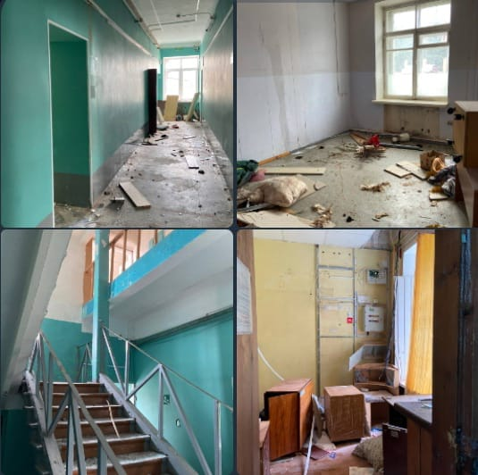
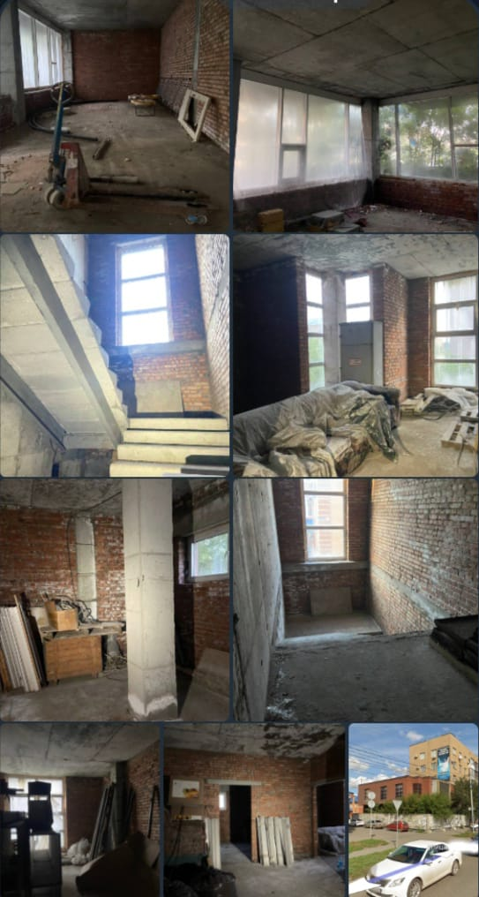
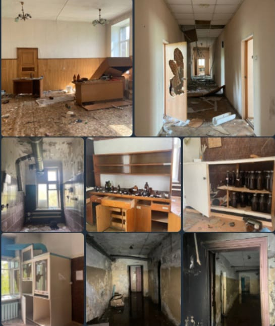
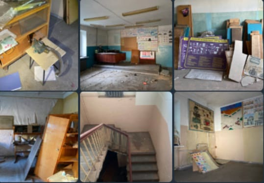

Список Заброшек:
общежитие ОмГАУ №1
общежитие колледжа агробизнеса.Причина расселения предположительно ,
нехватка бюджета на содержание или ненадобность.Представляет интересь лишь красивой и необычной лестницей, и архитектурой.
В остальном помойка.
Состояние: плохое
охраняемость: незначительная
Адрес: Орджоникидзе, 47

Недостроенное кафе
Заброшенная стройка,предположительно кафе.
Двухэтажное пристроеное здание.Внутри различная мебель, техника,
Строительный хлам и т.д.
Состояние: Плохое
Охраняемость: незначительная
Адрес: скрыт

Центр гигиены и эпидемиологии
Центр гигиены и эпидемиологии по жд транспорту, обеспечивает
санитарно-эпидемиологический надзор на обЪектах жд транспорта.
Представляет из себя двухэтажное здание,внутри находились
лаборатории и прочие комнаты.Везде разбиты бутылки с разными
реагентами.Все засрано и разбито,делать нечего.
На въезде стоит разобраный ВАЗ
Состояние: Плохое
Охраняемость: незначительная
Координаты: 54.916200,73.360657

Учебный комбинат автомобильного транспорта
сфера деятельности предприятия-обеспечивание професиональной подготовки
незанятых безработных гаражан,представляет собой небольших размеров здание.
точной информации по закрытию нет,предположительно аварийность.Внутри находтся склад.
Местами проваливается пол,протекает крыша.На територии находится арендатор
состояние: плохое
охраняемость: частичная
адрес:скрыт

вы посмотрели все имеющиеся заброшки на этом сайте!